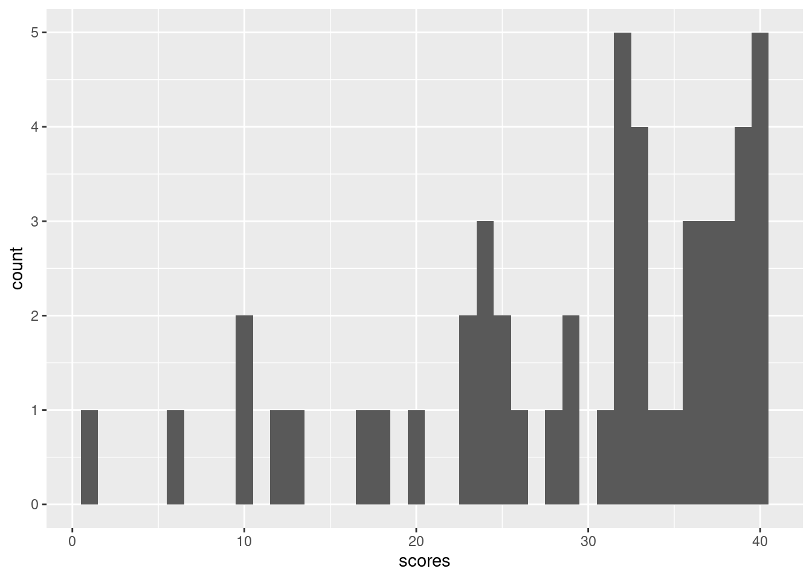
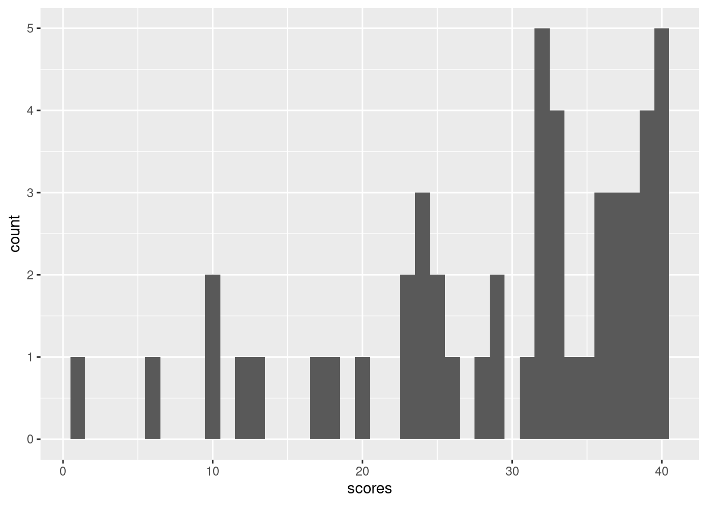
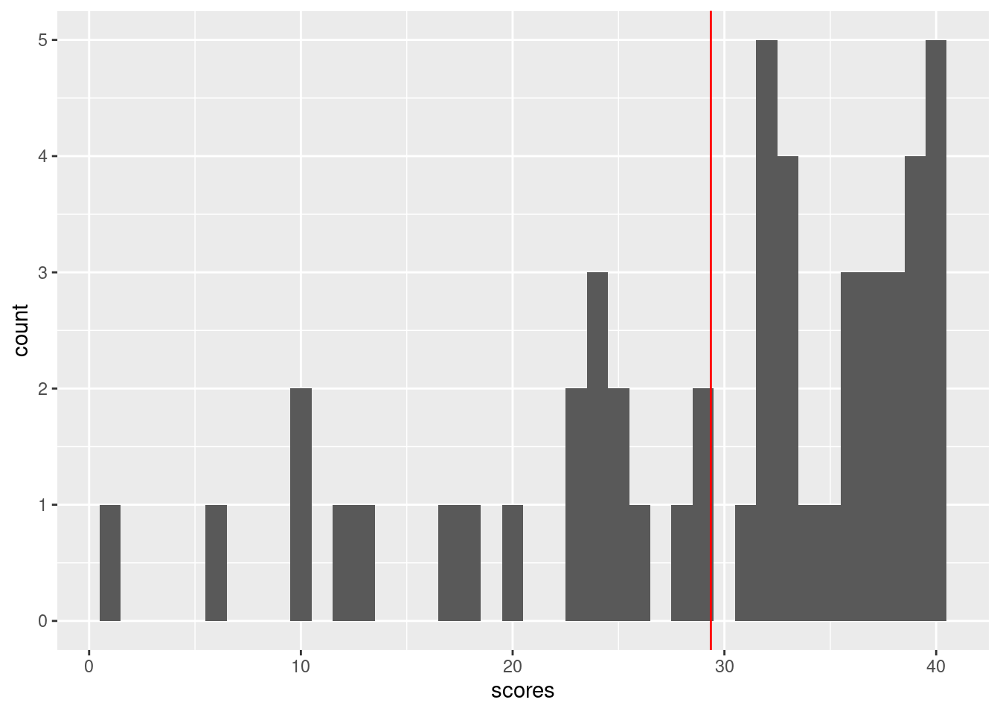

ggplot() + geom_histogram(aes(x=scores), bins=40)
\(\textcolor{white}{\LaTeX}\)
Here is a histogram of the final exam scores from last year’s 151A class. There were 50 students, and the maximum score was 40.
ggplot() + geom_histogram(aes(x=scores), bins=40)
Suppose I collected all the grades and labeled them \(y_1\), \(y_2\), up to \(y_N\), where there are \(N\) students in the class. I then compute
\[ \ybar = \meann \y_n. \]
In this case, \(\ybar = 29.36\). It happens that this corresponds to a score of 73.4%.
Today we will talk about:
Though this may seem belaboured, it will set us up well for the corresponding interpretations in the more complicated setting of linear regression.
One intepretation of this is simply a measure of the “center” of the distribution.
ggplot() +
geom_histogram(aes(x=scores), bins=40) +
geom_vline(aes(xintercept=ybar), color="red")
Of course, other measures of center exist, like the median, which in this case was 32. In general, the mean and median are of course different:
\[ \textrm{Median} = 32 \ne 29.36 = \textrm{Mean}. \]
This is useful as a summary statistic, answering something roughly like “what was a roughly typical score,” maybe for the purpose of assessing whether the final was too hard or too easy. (I think this indicates that it was too hard.)
In this measure, there is no statistical uncertainty. We ask what the sample mean of scores for this particular class were, and we computed it.
We might doubt that the number 29.36 is unreasonably precise. After all, if we had somehow given the “exactly same class and exam” to a “different set of students,” then the final exam scores would have been different, even though the thing we’re ostensibly trying to measure, the “hardness” of the exam, would be the same. In this model, we implicitly imagine that the test scores we saw were \(N\) draws from some hypothetical infinte distribution of a random variable \(y\). We would like to know \(\expect{y}\), but have only \(\ybar\). It will be useful to give \(\expect{y}\) a name; let’s call it \(\mu := \expect{y}\).
It’s worth reflecting for how hard it is to make the preceding conceit precise. It’s impossible to teach the “same class” to a different set of students. Further, even if you could, students choose this class, they are not randomly assigned. And there is no infinite pool of students. Still, this conceit seems to capture something intuitively sensible — that the precise score we saw may depends in some way on the ideosyncracies of these particular students, and would plausibly be different had those ideosyncracies been different but still “typical.”
Taking the conceit for granted, we want to know \(\mu\), which is just a number, but we observe \(\ybar\), which we are imagining is a random variable (since it is a function of \(\y_1, \ldots, \y_N\), which are random). In what sense does \(\ybar\) tell us anything about \(\mu\)? As long as \(\var{y} < \infty\), the most important property \(\ybar\) has is “consistency”:
\[ \ybar \rightarrow \mu \quad\textrm{as }N \rightarrow \infty. \]
This follows by the “law of large numbers,” of LLN, which will be an important tool in discussing the properties of linear regression.
Note that the left hand side is a random variable, but the right hand side is a (non–random) constant. We won’t deal with this carefully in this class, but formally we mean something like
\[ \prob{\abs{\ybar - \mu} > \varepsilon} \rightarrow 0 \quad\textrm{as }N \rightarrow \infty, \textrm{ for any }\varepsilon > 0. \]
This is a one of a (class of) deterministic limits that can apply to random variables. Specifically, this is called “convergence in probability”. There are in fact many different modes of probabilistic convergence, and their study is a very interesting (but more advanced) topic. (In this case, it happens that the LLN also applies with “almost sure” convergence.)
Of course, there are many estimators besides \(\ybar\) which are also consistent. Here are a few:
\[ \begin{aligned} \frac{1}{N - 1} \sumn \y_n \quad\quad\quad \ybar + \frac{1}{N} \quad\quad\quad \exp(1/N) \ybar \quad\quad\quad \frac{1}{\lfloor N/2 \rfloor} \sum_{n=1}^{\lfloor N / 2 \rfloor} \y_n, \end{aligned} \]
and so on. Why you would choose one over another is a major topic in statistics which we will touch on only lightly in this course.
How close is \(\ybar\) to \(\mu\) for any particular \(N\)? It’s impossible to know precisely, since we don’t actually know the distribution of \(\y\) — we don’t even know its mean. But for large \(N\), we can take advantage of another asymptotic result, the central limit theorem, or CLT. Suppose that we know \(\sigma := \sqrt{\var{\y}}\). Then
\[ \frac{1}{\sqrt{N}} \sumn \frac{\y_n - \mu}{\sigma} \rightarrow \gauss{0, 1} \quad\textrm{as }N \rightarrow \infty. \]
The CLT will also be a key tool in studying the properties of linear regression.
Note that the left hand side is a random variable and the right hand side is also a random variable. Here, we mean \[ \abs{ \prob{\frac{1}{\sqrt{N}} \sumn \frac{\y_n - \mu}{\sigma} \le z} - \prob{\gauss{0, 1} \le z} } \rightarrow 0 \quad\textrm{as }N \rightarrow \infty, \textrm{ for any }z. \]
This is called “convergence in distribution.” Note that it’s the same as saying the distribution function of the left hand side converges pointwise to the distribution function of the right hand side. Again, we won’t be too concerned with modes of probabilistic convergence in this class.
Using the CLT, we can say things like the following. Suppose that we choose \(\z_\alpha\) so that \(\prob{-\z_\alpha \le \gauss{0, 1} \le \z_\alpha} = 0.95\). Then by the CLT,
\[ \begin{aligned} 0.95 ={}& \prob{-\z_\alpha \le \gauss{0, 1} \le \z_\alpha}\\ \approx{}& \prob{-\z_\alpha \le \frac{1}{\sqrt{N}} \sumn \frac{\y_n - \mu}{\sigma} \le \z_\alpha} & \textrm{(by the CLT applied twice)}\\ =& \prob{-\sigma \z_\alpha \le \frac{1}{\sqrt{N}} \sumn (\y_n - \mu) \le \sigma \z_\alpha} & \textrm{(algebra)}\\ =& \prob{ - \frac{\sigma}{\sqrt{N}} \z_\alpha \le \frac{1}{N} \sumn (\y_n - \mu) \le \frac{\sigma}{\sqrt{N}} \z_\alpha } & \textrm{(algebra)}\\ =& \prob{ - \frac{\sigma}{\sqrt{N}} \z_\alpha \le \ybar - \mu \le \frac{\sigma}{\sqrt{N}} \z_\alpha} & \textrm{(algebra)}\\ =& \prob{ \ybar - \frac{\sigma}{\sqrt{N}} \z_\alpha \le \mu \le \ybar + \frac{\sigma}{\sqrt{N}} \z_\alpha}. & \textrm{(algebra)}\\ \end{aligned} \]
This means that, whatever \(\mu\) is, then with 95% probability (under IID random sampling), it lies in the interval \(\ybar \pm \frac{\sigma}{\sqrt{N}} \z_\alpha\). That is, we have constructed a 95% two–sided confidence interval for the unknown \(\mu\), which in accounts for the random variability in \(\ybar\) as a measure of \(\mu\).
In this case, estimating \(\sigma\) using the sample variance estimator \(\meann (\y_n - \ybar)^2\), the confidence interval is \([26.62, 32.1]\).
It’s worth reflecting on what this does and does not mean. For example, does this mean that, if I don’t change the exam or syllabus this year, that we are extremely unlikely to see a mean exam score above \(33\) points? Certainly not; this is an underestimate of any reasonable notion of subjective uncertainty in this year’s exam scores. But one might think of it as a rough lower bound on the subjective uncertainty, since our model holds many things constant that cannot plausibly be held constant in reality.
Suppose we don’t start by trying to measure the property of some unknown distribution, but rather are simply trying to make a prediction about next year, but again under the assumption that students are randomly sampled from the same distribution and the class does not change.
Suppose we guess \(\beta\) (for “guess”). We want our guess to be close to the actual exam scores on average across students; suppose we’re willing to measure “close” by the squared error we make, so that if a student’s real exam score is \(y\), and we guess \(\beta\), we pay a “cost” of \((\y - \beta)^2\). We’d like to choose \(\betahat\) to solve
\[ \beta^* := \argmin{\beta} \expect{(\y - \beta)^2}, \]
where the expectation is taken over the distribution of test scores. The problem is that we don’t know the distribution of \(\y\), and so cannot take the above expectation. So we approximate it with the sample average,
\[ \betahat := \argmin{\beta} \meann (\y_n - \beta)^2. \]
It turns out that \(\beta^* = \expect{y}\), and \(\betahat = \ybar\). Here, we’re only trying to make a good prediction rather than estimate a distribution parameter, but the sample mean still turns out to be the quantity that we want.
Even though this may seem to be a more innocuous problem than estimating an unknown population mean, we still have to make the same assumptions about what causes variation from one year to the next. When you ask whether this is a likely to be a good predictor for this year’s test scores, the same set of concerns arise as when trying to estimate a population mean.
One final perspective on the sample mean may seem unnecessarily complex for the case of a sample mean, but will actually be fundamental to understanding linear models.
Consider the vector \(\Y = (\y_1, \ldots, \y_N)^\trans\), which is an \(N\)–vector, that is, a vector in \(N\)–dimensional space. Recall that the length, or norm, of a generic \(N\)–vector \(\vv\) is given by
\[ \norm{\vv} = \sqrt{\sumn \v_n^2}. \]
(This is by analogy with distances from the origin to a point \((x_1, x_2)\) in two dimensions, which is given by \(\sqrt{x_1^2 + x_2^2}\) via the Pythagorean theorem.)
In the prediction problem, we’re trying to approximate each \(\y_n\) with the same number, \(\beta\). We can write the vector of differences
\[ \begin{pmatrix} \y_1 - \beta \\ \vdots\\ \y_N - \beta \\ \end{pmatrix} = \begin{pmatrix} \y_1 - \beta 1 \\ \vdots\\ \y_N - \beta 1 \\ \end{pmatrix} = \begin{pmatrix} \y_1 \\ \vdots\\ \y_N \\ \end{pmatrix} - \beta \begin{pmatrix} 1 \\ \vdots\\ 1 \\ \end{pmatrix} = \Y - \beta \onev, \] where \(\onev = (1, \ldots, 1)^\trans\) is the vector containing all ones. We can then rewrite the prediction objective as
\[ \begin{aligned} \betahat :={}& \argmin{\beta} \meann (\y_n - \beta)^2 \\ ={}& \argmin{\beta} \frac{1}{N} \norm{\Y - \beta \onev}^2 \\ ={}& \argmin{\beta} \norm{\Y - \beta \onev}^2. & \textrm{(since the }1/N \textrm{ doesn't affect the argmax)}\\ \end{aligned} \]
In other words, we’re trying to find the vector of the form \(\beta \onev\) that is closest to \(\Y\). Note that vectors of the form \(\beta \onev\) are a one-dimensional linear subspace of \(N\)–dimensional vectors, so we are trying to find the best approximation to the vector \(\Y\) in that particular linear subspace.
To find the solution, we can choose \(N-1\) linearly independent vectors \(\uv_2, \ldots, \uv_N\) that are all orthogonal to \(\onev\). Since these vectors, together with \(\onev\), span the \(N\)–dimensional vector space, we can always write
\[ \Y = \a_1 \onev + \sum_{n=2}^N \a_n \uv_n, \]
for some \(\a_n\). Applying \(\onev^\trans\) to both sides gives
\[ \begin{aligned} \onev^\trans \Y ={}& \a_1 \onev^\trans \onev + \sum_{n=2}^N \a_n \onev^\trans \uv_n \\ ={}& \a_1 \onev^\trans \onev & \textrm{(by orthogonality --- that is, by construction)} \\ \Rightarrow \quad \a_1 ={}& \frac{\onev^\trans \Y}{\onev^\trans \onev} \\ ={}& \frac{\sumn \y_n 1}{\sumn 1 \cdot 1} & \textrm{(expanding the inner products)}\\ ={}& \frac{\sumn \y_n}{N} \\ ={}& \ybar. \end{aligned} \]
We thus have
\[ \Y - \ybar \onev = \sum_{n=2}^N \a_n \uv_n, \]
the norm of which is minimized by taking \(\a_n = 0\) for \(n \ge 2\).
This is an argument via linear algebra that \(\betahat = \ybar\). Although arguably unnecessarily complicated for the sample mean, this technique will be very useful for more general regression problems.
What is the connection with linear regression? Recall that linear regression is the problem of finding \(\betahat\) that solves
\[ \betahat := \argmin{\beta} \sumn (\y_n - \beta \x_n)^2, \]
for some “regressors” \(\x_n\). It is interpreted as finding the “best” fit (in a squared error sense) through a cloud of points. If we take \(\x_n = 1\), we can see that the sample mean is in fact a linear regression problem, with \(\x_n\) taken to be identially one!
As a consequence, much of the intution and techniques we’ve developed here will apply to the much more general linear regression setting, with some additional formal complexity, but essentially the same set of core ideas.